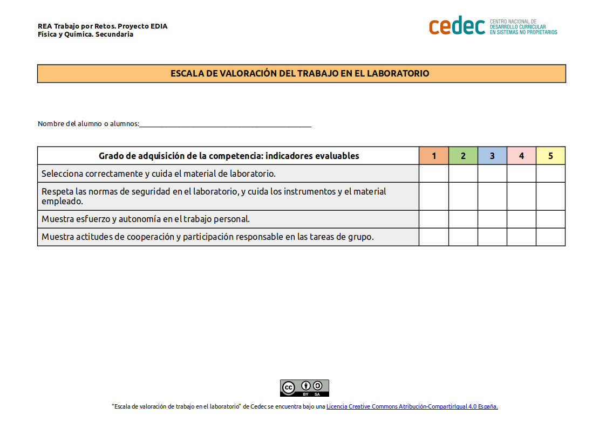
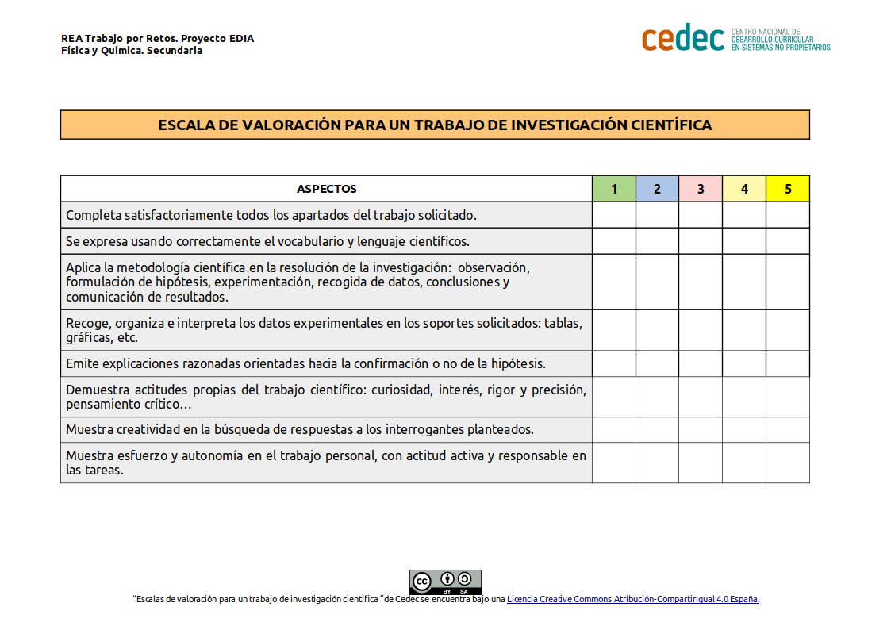

Transferencia del calor
La transferencia del calor aparece frecuentemente en la vida cotidiana, por ejemplo cuando calentamos agua en un cazo en el fuego de nuestra casa o cuando ponemos la calefacción.

Es conocido que la transferencia de calor se puede realizar de tres formas: conducción, convección y radiación.
Además tenemos claro que la transferencia de calor se produce entre sistemas en contacto que tienen diferentes temperaturas. ¿Pero cómo se produce? ¿Es igual en todos los materiales?
Nuestra tarea será investigar estas formas de transmisión del calor y aplicarlas en el estudio de un sistema de nuestro entorno.
Investigando la transferencia de calor
- Duración:
- Dos sesiones
- Agrupamiento:
- En pequeño y gran grupo
En esta tarea vamos a realizar tres actividades para comprobar las formas de transferencia del calor:
Las actividades las realizaremos en grupo.

Actividad 1: Nos informamos
Vamos a ver un vídeo sobre la transferencia de calor. Es conveniente tomar anotaciones para luego emplearlas en nuestra investigación.
Podemos emplear el siguiente guion:
| Conducción | Convección | Radiación | |
| ¿Cómo se produce? | |||
| Ejemplos |
Veamos el vídeo:
Danstein. Calor y Temperatura P5 Formas de transmisión de calor (CONDUCCIÓN CONVECCIÓN Y RADIACIÓN) (Licencia Creative Commons)
Actividad 2: Experimentamos con la transferencia del calor
Vamos a realizar la siguiente actividad, con los siguientes materiales:
- Dos globos.
- Vela.
- cerillas.
- Agua.
- Barrita metálica o cucharilla.
Procedimiento:
1.-Inflamos el globo y lo ponemos encima de la vela encendida, realizamos nuestra hipótesis y comprobamos qué pasa.
|
Hipótesis: ¿Qué pasará al poner el globo encima de la vela? |
Comprobación |
Explicación |
Dificultades encontradas |
2.- Llenamos un globo con agua y lo ponemos encima de la vela encendida, realizamos nuestra hipótesis y comprobamos qué pasa:
|
Hipótesis: ¿Qué pasará al poner el globo encima de la vela? |
Comprobación |
Explicación |
Dificultades encontradas |
3.-Ponemos la cucharilla metálica o la barrita metálica por un extremo encima de la vela, realizamos nuestra hipótesis y comprobamos:
|
Hipótesis: ¿Qué pasará al poner la barra encima de la vela? |
Comprobación |
Explicación |
Dificultades encontradas |
Actividad 3: Investigamos un sistema de nuestro entorno
El profesor o profesora nos propondrá cuatro sistemas para investigar y los repartirá por grupos.
Cada grupo investigará las transferencias de calor implicadas en el sistema, para ello tendrán en cuenta los conocimientos adquiridos en al actividades anteriores. Finalmente cada grupo explicará en el grupo de clase su sistema y las transferencias de calor implicadas, se utilizaran imágenes, esquemas o dibujos para ayudar en las explicaciones.
Además de la información de las actividades anteriores, en caso de duda podemos consultar la siguiente información sobre transferencia de calor
Sistemas propuestos:
- Radiador en una habitación
- Cazuela con leche en una vitrocerámica
- Globo aerostático
- Sol
Evaluación y reflexión
Una vez que hemos finalizado la tarea, es un buen momento para reflexionar en nuestro diario de aprendizaje. Algunas sugerencias pueden ser:
- ¿Qué he aprendido?
- ¿Qué me ha sorprendido más de todo el proceso? ¿Por qué?
- ¿He cambiado alguna idea previa? ¿Cuál?
- ¿Qué me ha resultado más difícil? ¿Por qué?
Evaluación
Para la evaluación utilizaremos las siguientes escalas de valoración
1.-Escala de valoración para un trabajo de laboratorio (descargar en formato editable odt y pdf).

2.-Escala de valoración para un trabajo investigación científica (descargar en formato editable odt y pdf).
